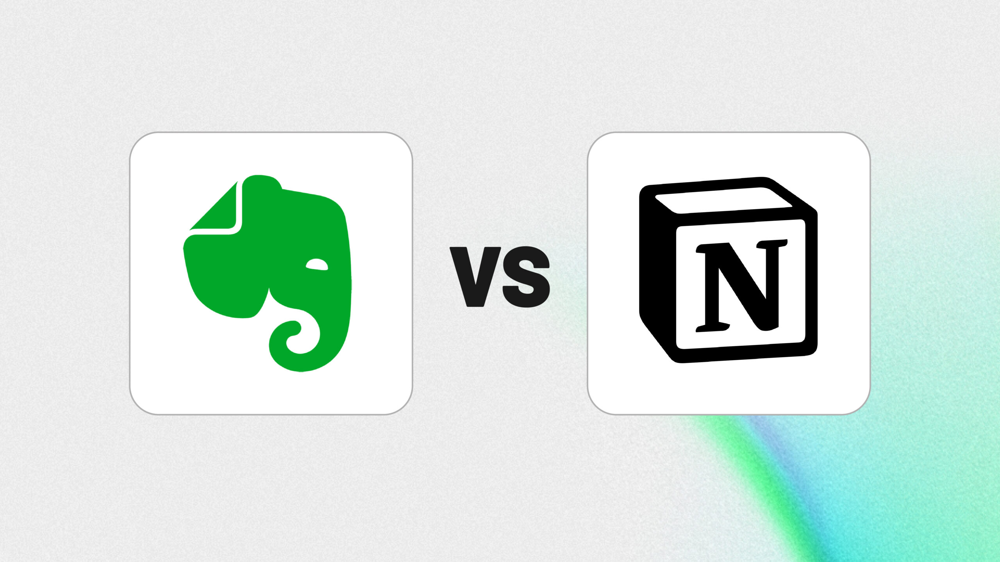

Notion vs. Evernote: Which Note-Taking App Reigns Supreme?
A head-to-head comparison of features, flexibility, pricing, and use cases for Notion and Evernote.
By Upingi Team / Updated on January 05, 2024
A head-to-head comparison of features, flexibility, pricing, and use cases for Notion and Evernote.
By Upingi Team / Updated on January 05, 2024
Notion and Evernote are leading apps in the productivity space, but cater to slightly different needs. We break down the key differences to help you choose.
Comparing Notion's block-based system and database capabilities with Evernote's traditional note and tagging structure.
| Feature | Notion | Evernote |
|---|---|---|
| Note Organization | Highly flexible (Pages, Databases, Blocks) | Traditional (Notebooks, Notes, Tags) |
| Flexibility | Extremely high (Wiki, Project Mgmt, etc.) | More focused on note-taking/archiving |
| Web Clipper | Good, improving | Excellent, mature |
| Offline Access | Limited (improving but needs sync) | Robust (especially on paid plans) |
Choosing between Notion and Evernote often comes down to your preferred style of organization and the complexity of your needs. Consider these profiles:
Ultimately, the Notion vs. Evernote debate hinges on a fundamental difference in philosophy. Notion positions itself as an all-in-one workspace, a flexible set of building blocks capable of becoming almost anything – a task manager, a wiki, a database, a note-taker. Its strength lies in this unparalleled flexibility and the power of its interconnected databases. However, this comes with a steeper learning curve and potentially less fluid quick-capture capabilities compared to its rival. Evernote, conversely, remains laser-focused on its core competency: capturing, organizing, and retrieving notes and information effortlessly. It prioritizes speed of capture, reliable synchronization, and powerful search, making it an exceptional digital filing cabinet. While it has added more features over time, its structure remains more traditional and less customizable than Notion's blank canvas approach.
If you dream of building bespoke systems, managing projects alongside your notes, creating team wikis, and aren't afraid to invest time in learning its intricacies, Notion is likely the more rewarding choice. Its potential for creating integrated workflows is immense. On the other hand, if your priority is reliably capturing ideas, web pages, and documents from anywhere, organizing them with simple tags and notebooks, and finding them quickly later, Evernote's focused approach and mature feature set, particularly its web clipper and OCR search, might serve you better. Consider trying the free tiers of both to see which workflow resonates more with your personal style and requirements before committing.
Recommendation: Choose Notion for ultimate flexibility and building interconnected systems. Choose Evernote for unparalleled quick capture, reliable archiving, and robust search across diverse content types.